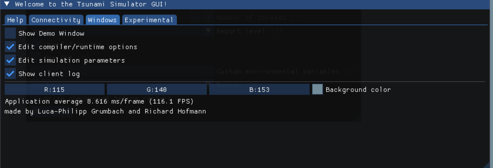
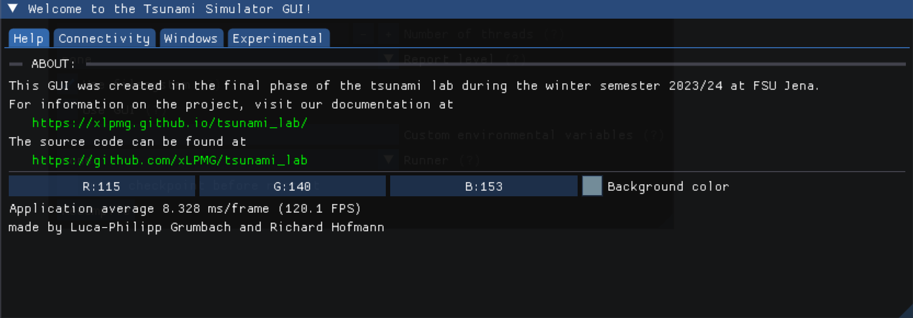

10. Project Phase
In the project phase we decided to implement a userfriendly Gui. The aim is to make the usage of our Tsunami solver as easy and interactive as possible.
GUI

For the layout we chose to use multiple tabs, in order to make the use more clear. The first page gives general informations about the project and refers to our website.

Tab number two handles the the connection to thhe server. The properties for interacting with the server are getting set here. Furthermore, the connection can also be disconnected here.
On the next page the user can find all options of configuration for the simulation. The simulation parameters like cell amount, size and offset can be set here. In Addition to that, compiler and run time options can be found here. These contain differetn modes, compiler options, flags and usage choices. After selecting the simulation has to be recompiled with the according button below.
The last tab contains further actions to interact with the simulation. First, the simulation can be started or killed here. Also files for the bathymetry and displacement can be chosen. As an addition, the user can get data like the heigth from the simulation.
Communicator
For communication between simulation and the gui Luca-Philipp introduced a communication library. The Communicator.cpp library can be used to easily create a client-server TCP connection and handle its communication and logging.
communicator_api
Since all communication happens using text over TCP, we had to implement a structure that both server and client can adhere to in order to guarantee correct communication. For this, we decided to send all data in JSON format. Furthermore, each message follows a strict pattern. It consists of 3 parts: the TYPE which provides information on the nature of the message, the KEY which is a unique identifier for each message, and ARGS containing other message data (such as parameters) in JSON format.
enum MessagePart
{
TYPE,
KEY,
ARGS
};
enum MessageType
{
SERVER_CALL,
FUNCTION_CALL,
OTHER,
SERVER_RESPONSE
};
struct Message
{
MessageType type = MessageType::OTHER;
std::string key = "NONE";
json args = "";
};
It also implements various functions to convert from and to json format, such as messageToJson(), messageToJsonString()
and jsonToMessage().
Communicator.hpp
The library provides functions to start server and client and to send messages to each other.
Transmitted data is logged and can be retrieved via getLog().
Describing the detailed code here would be too extensive and not necessary, as this library
is rather just a tool for us to develop the actually interesting code.
Communication example
communicator_api.h
inline const Message START_SIMULATION = {MessageType::SERVER_CALL, "start_simulation"};
Client-side usage:
xlpmg::Communicator m_communicator;
m_communicator.startClient(IPADDRESS, PORT)
[...]
xlpmg::Message startSimMsg = xlpmg::START_SIMULATION;
m_communicator.sendToServer(messageToJsonString(startSimMsg));
Server-side usage:
xlpmg::Communicator m_communicator;
m_communicator.startServer(m_PORT);
// listen for key
Server
TODO